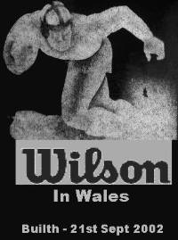
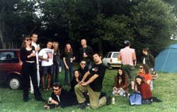
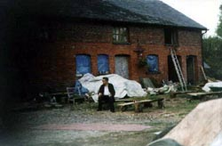
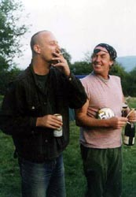
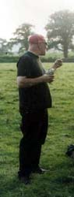

|
|
 |
 |
Gigs
::
2002
:: Sep21
|

Venue: birthday party
Where: Builth Wells, Wales England
When:
Sunday, Friday 21st, 2002
Headstone Says..
Well, the weekend was mental. As you know, we did the Roadmender on Friday night.
What you probably didn't know about was the Wilson Vietnam trip
to Wales yesterday. We didn't advertise it coz it was essentially a
birthday party for an expat Northamptonian. Plus nobody would tell us
the name of the farm where it was taking place! Still, we found the
fecker and rocked the shed fully. Full reports (featuring The Face O' Death) to follow.

"Group Pic"
Left to right: Kathie McGinty; Nathan Harris; Pete Heyworth,
landlord of the Racehorse; Fiona from P-Hex; me, on the floor already; Ian
Anderson (P-Hex, Slipstream); Caroline and Steve Ward (who does the sound);
Stevie G. Wilson (Wilson, P-Hex, instigator of the whole enterprise);
Agent Wilson, posing; Nita Allbright; Fred Ryan (back turned); Kath Schaer (aka Misery Wilson);
Jason Kells (Sheep Thieves)
|

"No Mates"
|

"Steve and Fred"
|

"Curtis's painted head"
|
|
Visitors' comments for this page
|
Freds 50th
tone-at-stavsound.co.uk
- Tone the sound man
25Jun2009 11:12 AM
(15 years 27 days ago)
From the sound man to the band. Yep it surely did rock, and I have the tapes to prove it. Good work all round, though it did take a long working day to get all the dust n shite out of the amps and off the cables afterwards.
All the best guys,
Tone
|
Builth Wells
Wilson Headstone
- NN1
25Sep2002 7:45 AM
(21 years 302 days ago)
Saturday 21st September - BUILTH WELLS
It is eleven thirty on a beautiful, sunny Saturday morning in the car park of the Racehorse. Members of Wilson and P-Hex are gathering, ready for the 150 mile trip to Builth Wells in the heart of Wales. Cars are filled with equipment as people sip odd non-alcoholic drinks. Kathie McGinty and I are travelling in our Fiat Uno with a bunch of equipment. Russ is taking Kath Schaer, Curtis and Bot are travelling with Steve Davies, Lindsay Spence (the singer from P-Hex) and Nathan from Junior Loaded in a car dubbed The Zoo , and Stevie G is travelling with P-Hex. At about midday the first car of the convoy sets off.
We are headed for a farm which Alan Moore bought back in the Nineties, which has been home to his pal Fred Ryan for several years now. Today is the occasion of Fred s fiftieth birthday and a massive party has been planned. Apart from the groups, there are several dozen Northampton people heading west today.
Thoughtfully, nobody has been told the name of the farm in question. Our instructions are to find a bar in Builth called The White Hart and ask for Fred s farm . Fortunately enough, P-Hex have done this gig before, so we still entertain hopes of finding the place.
Once we get west of Worcester the roads grow narrow and the houses more ancient and picturesque. Every other village gets me going Oh, eccentric life here, isn t it? in the manner of Turkish George. It is barely recognisable as the same country as Northampton. Just west of a place called Kington we pass through an intimidating gorge into Welsh Wales. Well, at least now it really is a different country.
The first thing we see as we cross the River Wye into Builth is Kath and her boyfriend Jay standing outside our hotel. The Lion Hotel boasts a George Best bar and a Lady Diana restaurant, as well as a splendid African Grey parrot who shouts Wanker! We check into our rooms, which are much more comfortable than the dilapidated public areas of the hotel would suggest. Ours has a fantastic view out over the river. We stroll up the picturesque main street to the White Hart for directions and a pint, then hit the local supermarket for supplies. On our way out of the supermarket we are passed by The Zoo, with Bot hanging out of the window, making maximum use of his bullhorn: Wilson in the area! Pat Fish in the area! he broadcasts as the car disappears up the high street, Whoop! Squawk! Bleep!
The farm is not easy to find, and we make one or two false landings among bewildered locals before finally locating our objective at the end of an obscure and lengthy country lane. We pull into the parking and camping field just in time to see the local Police helicopter circling overhead, attracting all kinds of
long-distance abuse.
The Zoo is promptly converted into a giant ghetto blaster and The Streets are on once again. People are wandering about grinning and greeting as NN1 comes to the deep countryside. Tents are going up, dogs are chasing sticks and children are getting dressed up in ludicrous costumes. One small boy of about eight is wearing a push-up bra and make-up. More alarmingly, another tiny is sporting a terrifying skull mask, which leads to his immediately being dubbed The Face Of Death.
Almost immediately The Face Of Death and MC Bot become entangled in a mortal struggle. The tiny demon follows Bot everywhere like some superhero s sidekick gone horribly wrong, and it is not long before things get gnarly. One small child is overheard telling his mother: This man is chasing us, like,
well badly!
Later, alarmingly, other, adult Faces Of Death turn up. Fortunately they do not seek retribution from our singer. In addition, there are nuns, pirates, monks and a man in a fez with what I can only describe as two faces. Now that, I tell him, Is just plain scary. Though not, perhaps, as scary as the old friend of Curtis who has turned up with a full-size, razor-sharp Samurai sword.
Curtis himself rapidly becomes a casualty of the fancy dress tendency. After being on site for only ten minutes he re-appears with his baldy head painted red and blue. Since this has been accomplished using car spray paint, he remains something of an odd apparition for the rest of the weekend.
The farm itself is made up of three buildings: one entirely residential, one devoted to catering and one, a large barn, the music venue. There are Muscovy ducks waddling around the farmyard and many goats in an enclosure just nearby. I strike up what I like to consider a strong and lasting relationship with the Head Goat ( el gran cabro numero uno mas importante , I call him). Somebody then points out that perhaps we should not get too attached. There is a large goat skin hanging up to dry on a metal frame and curried goat on tonight s menu.
Later, when I try to get fed, I discover that the choice of dining is restricted to this goat curry and a ferocious chilli con carne. Not fancying a dinner of cold white rice, I take solace in a dinner of liquorice allsorts before taking steps to ensure that I shall not think of food again. Thanks, lads.
There is an endless wait for soundchecks, as nobody seems to have any clue as to what is going on. As well as Wilson and P-Hex, two local bands have been booked to play, and neither has been spotted yet. In the end, we settle for just checking the DAT player with the soundman, figuring that as long as this is reliable we can turn in a set. Then we amuse ourselves drinking, smoking and checking out the two large bonfires that have been started.
Eventually the first band appears. They are all a little bit older than us, and they are a classic festival jamming band. Although they are not my thing at all, they seem quite well suited to the event. I begin to wonder if we really ought to be playing here, and entertain fantasies of clearing the barn altogether when our turn to play comes around. Not that I am really bothered whether we get to play or not, for I am having a perfectly good time already.
Others do not take so well to Band No. 1. Certain elements of the NN1 posse start popping over to the soundman, telling him to put a stop to this degenerate hippy nonsense. Happily Band No. 1 draws its increasingly tedious set to a close without any coercion.
Band No. 2 are young and have a broken axle from trying to get to the farm. The good news is that this means that they can use the same drum kit as Band No. 1.
The bad news is that they play a set made up entirely of old rock covers, Jimi Hendrix and the like. Again, I worry that the Wilson sound might be that little bit uh unsuitable for the night. After all, this is a fiftieth birthday party in the middle of nowhere. Stevie G, however, tells me not to worry. Someone has to get a-hold of this thing and turn the vibe around, he tells me, I know I can do it There is, I feel, a certain ring of desperation about his remark.
The sun is down, the bonfires are raging, people are milling about in mad costumes, fuelled by drink, curry goat and God-knows what else. I think back to Sumosonic s doomed and foolhardy trip to Melchbourne in 1998, a date we dubbed Sumo Vietnam and which turned out to be our last ever gig. Have we been and gone and done it again? Are we facing Wilson Vietnam?
Now, as I have come to understand the situation, we shall be taking the Band No. 3 slot, with P-Hex topping the bill. But as the Queens Of The Stone Age do sonic battle with the KLF in the Wilson ghetto, Stevie G arrives to say that
P-Hex are in disarray. Their drummer has taken a dislike to the situation and is agitating to get back to Northampton as quickly as possible. So P-Hex are now going to take the Band No. 3 slot and we are to move to the top of the bill. Oh Christ! At least P-Hex have played here before and gone down well. Whereas we have absolutely no idea what to expect.
P-Hex take the stage and are sounding strong. Whatever the emotional state of their drummer, he is playing hard and grinning from ear to ear. The barn is full of punters and the atmosphere really is picking up. The Reverend Lindsay rocks the house in his own special style and new vocalist Fiona is doing well. Stevie G can be seen, stage right, holding his guitar above his head and going mental.
Once P-Hex are done there is a burst of activity as Wilson move their stuff onto the stage. It is now that I make a nasty discovery. The floor of the barn, it turns out, has recently been concreted, and there is still a huge amount of dust everywhere. By the time I am set up, my leads have turned colour from black to white and there is a fine sand all over my guitars. And all over me.
As Quality People starts up, MC Bot is nowhere to be seen. In fact, he is standing by one of the bonfires, minding his own business. He suddenly comes barging into the barn, scattering punters, just in time to pick up the first line of the song! Despite the lack of a soundcheck, the band sounds great. Many thanks to Steve Ward for his work at the controls, and to the local soundmen for having such a good rig.
There is not a whole lot of space on the stage here and I am under constant threat from our hyperactive lead singer. Imagine, therefore, my disquiet when, two songs into the set, Bot demands: Where are my dancers? Before I know it we are joined on stage by three Welsh girls in belly dancers costumes! My pedals don t stand a chance: by the end of Burn Hollywood Burn my phaser is literally standing on its head. But we press on and Hippy Shit rocks the shack large-style. The punters are going Edgar Wallace Donuts. All my anxieties have been in vain. The barn is heaving and these fuckers are going for it in a big way.
As we move into Critters I find myself standing unsteadily on one of the monitors. Curtis pal with the sword is now onstage, trying to feed joints to the musicians. Because of the lack of space and the frenetic activity he is surprisingly unsuccessful in this. He resorts to firing off blowbacks, but even this is an inexact science in the onstage chaos. By the fiery ending of Dark Agenda he is simply taking a huge lungful and running up to people and French kissing them. It is, I can honestly say, the first time that I have been French kissed by a man while playing a guitar solo. Anywhere. The general reaction among the NN1 posse, as expressed by Kathie McGinty: How gay was that?
Dark Agenda goes down in a blaze of noise, which somehow mutates into a spirited acapella Happy Birthday for Fred. The vibe is grand. It s time to pack up our filthy equipment and grab another beer.
By the time we have packed up, it turns out that the P-Hex wagon has already set off back to Northampton with the dissident drummer on board, leaving Stevie G stranded without a ride. An hour or two goes by as we try to locate taxis to take us back to the hotel. Despite Fred s assurances that the local firms have been primed for our call, it is by now 3:00 am and we get nowhere. Stevie G curls up and goes to sleep in the back of The Zoo. Eventually, after some fairly agonised soul-searching and a swordsmanship exhibition from Curt s pal, we set off in a very slow convoy through the mist, making it back to the hotel a tense but uneventful fifteen minutes later. Curtis takes his newly colourful head to bed, and Kath, still jet-lagged does the same. For the rest of us it s the usual beer and smoke party at the hotel. Against all the odds we have come and done the shit. We decide two things: (i) we are some bad muthafuckas, and (ii) it has definitely been an away win.
Men Of The Match (so to speak): Kathy Schaer for perseverance beyond the call
of jetlag. Stevie G for organising the Wales trip
and playing 2 sets in a single night.
|
|
|
{kind=link}
{kind=link}
{kind=link}
{kind=link}
{kind=link}